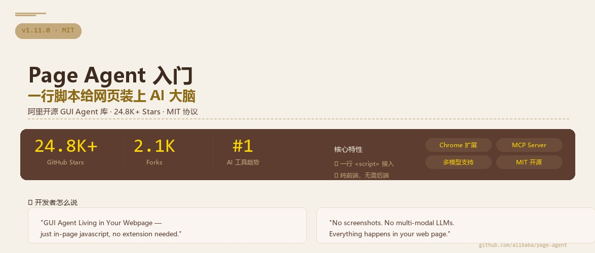

你琢磨琢磨，现在的网页产品，用户想要个"AI 助手"，你能怎么办？要么接一个 Dialogflow 那样的对话机器人，要么做个浏览器插件，要么搞个 Python 后端专门处理用户意图——每个方案都得折腾好几天甚至几周。说白了，想让网页听懂人话，门槛依然不低。
阿里在这方面搞了个让大家眼前一亮的东西。Page Agent，一个开源的前端库，你把它往网页里一塞，你的网页就能直接听懂自然语言指令——"帮我填一下这个表单""点那个登录按钮"——剩下的事它自己搞定。而且真就一行 <script> 标签的事。
⭐这玩意儿解决了什么问题？
好问题。我给你说两个场景，你感受一下。
🥲场景一：你在做 SaaS 产品
客户说"你们能不能加个 AI 助手？"传统做法：调研 → 选型 → 接 chatbot API → 设计对话流程 → 前后端联调 → 至少一周。用 Page Agent：一行 script 标签，当天上线。用户说"帮我创建一个新订单"，Agent 听懂指令，找到创建按钮，填表，提交。完事。
🤦场景二：你的后台管理系统太复杂了
ERP、CRM、后台—功能一多，菜单就有七八层。新员工培训半小时、老员工天天点鼠标。要是网页能听懂人话呢？"导出上个月的华南区销售数据，按产品分类排序"——Agent 自己导航到报表页、设置筛选条件、点击导出。培训时间归零。
关键在哪？不需要浏览器插件，不需要 Python 后端，不需要给 AI 喂截图。 就一个 JavaScript 文件，跑在你网页里，读你网页的 DOM，理解用户说什么，然后自己操作页面。全部发生在浏览器端。
01一句话说清楚 Page Agent 是什么
官方说法是"The GUI Agent Living in Your Webpage"——活动在你网页里的 GUI Agent。翻译成人话：
Page Agent = 一行脚本 + 你选的大模型 = 你的网页秒变 AI 智能体
它本质上是一个前端 JS 库，你装到网页里以后，它自己读网页的结构（DOM），拿给 LLM 分析，然后根据 LLM 的理解来操作页面。整个过程不需要截图、不需要多模态模型——纯文本搞定。
🔹不是对话机器人
它不是跟你聊天——它是直接操作你的网页。你说"点那个按钮"，它就真去点。
🔹不是 RPA
不是录好固定流程再播放——每次执行都是 LLM 看完当前页面状态后实时决策的。
🔹不需要后端
纯浏览器端运行，你甚至不需要自己的服务器来处理 AI 请求（当然 LLM 的 API Key 还是要的）。
02它的原理其实挺简单
来，我用人话给你拆解一下它工作的完整链路：
1提取 DOM 结构
Page Agent 扫描当前网页的 DOM 树，提取所有可交互元素（按钮、输入框、链接、下拉菜单等）的文本和结构信息，生成一份"页面快照"。
2发给 LLM 分析
把页面快照 + 用户的自然语言指令拼成 prompt，发给你配置的 LLM（通义千问、GPT、Claude，本地部署的也行）。
3LLM 返回操作指令
LLM 分析后告诉你：用户想做的事，对应页面上哪个元素、执行什么操作（点击、输入、选择等）。
4执行 DOM 操作
Page Agent 根据 LLM 的指令，直接在浏览器里操作 DOM——调用元素的 click()、修改 input 的 value、跳转链接等。
整个流程在 几百毫秒到几秒 内完成。你不需要理解 DOM、不需要写选择器、不需要操心页面结构变了怎么办——Agent 每次都是实时读的最新页面状态。
🔧 说个你可能关心的事
项目 DOM 处理部分参考了 browser-use（MIT 协议）的解决方案。换句话说，阿里不是从零造轮子，而是把 browser-use 的服务端 DOM 交互方案改造成了前端可用的 JS 库。这个思路很聪明——让你在浏览器端就能把 DOM 文本化并交给 LLM 分析，不需要 Python 环境。
03上手试试，真就一行代码
有两种方式，随便选：
方式一：CDN 引入（最快，几秒钟出效果）
<script src="https://cdn.jsdelivr.net/npm/page-agent@1.11.0/dist/iife/page-agent.demo.js"
crossorigin="anonymous"></script>
这段脚本自带了一个测试用的 LLM，加到你网页上就能直接跑。打开浏览器控制台，输入：
const result = await window.pageAgent.execute('帮我点登录按钮');
console.log(result);
方式二：NPM 安装（正式项目用）
npm install page-agent
然后在代码里：
import { PageAgent } from 'page-agent';
const agent = new PageAgent({
model: 'qwen3.5-plus', // 选你想要的模型
baseURL: 'https://dashscope.aliyuncs.com/compatible-mode/v1', // API 地址
apiKey: '你的 API Key', // 密钥
language: 'zh-CN', // 语言
});
await agent.execute('点击登录按钮');
⚠️ 新手提醒
Demo CDN 自带的测试 LLM 仅供技术评估，别在生产环境用。正式项目记得换你自己的 API Key 和模型。国内的推荐用通义千问（DashScope），国外的用 GPT 或 Claude 都行——这项目基本主流模型都兼容。
04聊聊配置参数和注意事项
new PageAgent() 接受一个配置对象，核心字段不多，但个个关键：
| 参数 | 说明 | 示例值 |
|---|
| model | 要用的模型名 | 'qwen3.5-plus' |
| baseURL | LLM API 的地址 | 'https://dashscope.aliyuncs.com/...' |
| apiKey | 认证密钥 | 'sk-xxxx' |
| language | 界面语言 | 'zh-CN' |
💡 小贴士
如果你只是想先试试水，不想配 API Key，直接用 CDN 的 demo 脚本就行——它内置了一个免费测试 LLM。想正式用的时候，再换成你自己的模型配置。这一套设计对新手相当友好。
05不止于此——还有 Chrome 扩展和 MCP
Page Agent 不只是单个网页里的脚本，它还提供两个扩展能力：
🌐 Chrome 扩展
让 Agent 跨多个标签页操作。你可以在一个标签页里让它去另一个标签页查数据、填表单。已上架 Chrome Web Store，直接安装就能用。
🔌 MCP Server（Beta）
通过 Model Context Protocol，让外部的 Agent 客户端（比如 Claude Code）来控制浏览器。你写一句"去那个网页帮我查一下订单状态"，Claude 就可以通过 MCP 调用 Page Agent 打开浏览器、翻到指定页面、读取数据回来。
这两个大招意味着什么？你想想，如果只是"一个网页里的 AI 助手"还不够震撼——但加上跨 Tab 操作和 MCP 协议支持，Page Agent 就从一个前端小工具变成了一个 浏览器自动化基础设施。好比说，你能让 Claude 直接操作你的网页后台去完成一个复杂的工作流，这在以前想都不敢想。
06哪些场景最适合用 Page Agent？
💼SaaS AI Copilot
几行代码给你的产品加上一个 AI 助手，用户说人话就能操作复杂功能。不需要后端改造，前端加一个 script 标签就搞定。
📋智能表单填充
ERP、CRM、后台管理——那些要填半天表单的场景，一句话搞定。比如"创建一个 VIP 客户订单，商品选 iPhone 15 Pro Max，256G，黑色，数量 2"。
♿无障碍访问
让视障用户或肢体不便的用户用自然语言控制网页，配合语音输入效果更佳。
🤖Agent 浏览器控制
通过 MCP Server，让 Claude、Cursor 等 AI 编程助手直接操作你的网页——自动化测试、数据爬取、批量操作，想象空间很大。
Q1：Page Agent 通过什么方式"看"懂网页内容？
👆 点击每个选项查看对错
Q2：要把 Page Agent 集成到现有 SaaS 产品中，最快的方式是什么？
👆 点击每个选项查看对错
📌 这节课你学到了什么
✅ Page Agent 是什么——一个让网页听懂人话的 GUI Agent 库
✅ 它的工作原理——读 DOM → 交 LLM 分析 → 操作页面
✅ 两种集成方式——CDN 一秒体验 / NPM 正式项目
✅ 核心配置参数——model / baseURL / apiKey / language
✅ 扩展能力——Chrome 扩展跨 Tab + MCP Server 外部控制
✅ 最适合场景——SaaS Copilot、智能填表、无障碍、Agent 自动化
📒
第 1 课 · 笔记完成
你已搞懂 Page Agent 的核心概念、工作原理和快速上手指南。
下一课我们实战——在自己的网页里真正接入 Page Agent。
📖 参考：github.com/alibaba/page-agent — README、Official Docs
📊 数据来源：GitHub 2026.07 — alibaba/page-agent 以 24.8K+ Stars 成为 AI 工具类热门项目